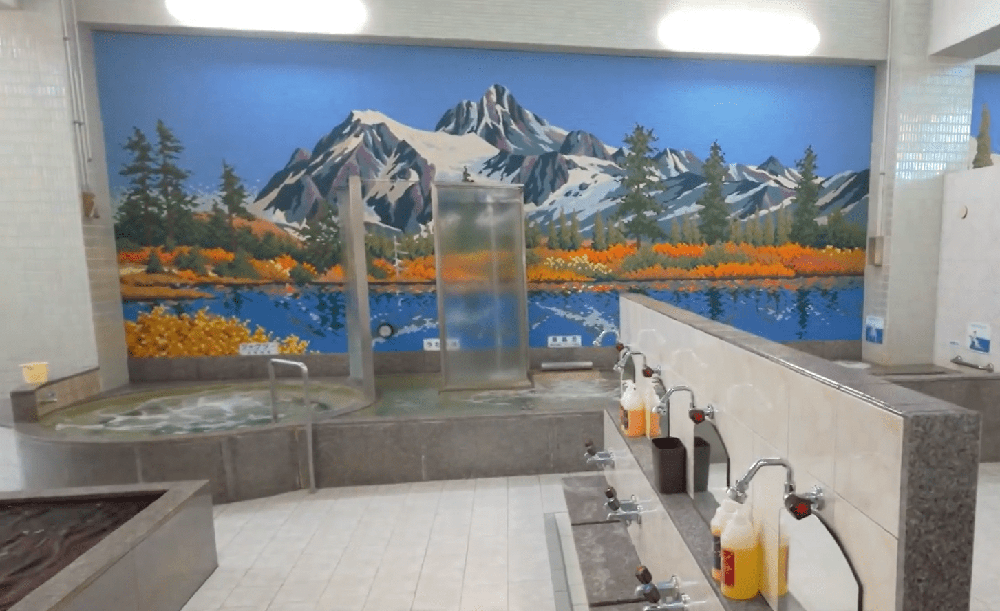
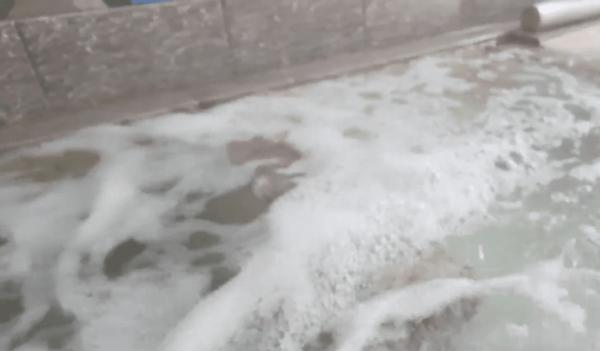
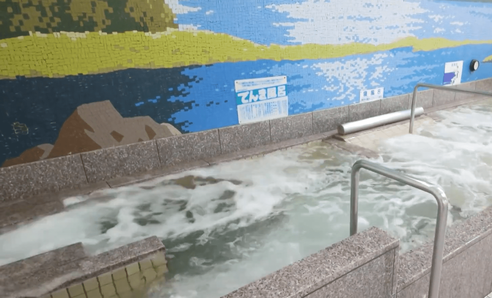
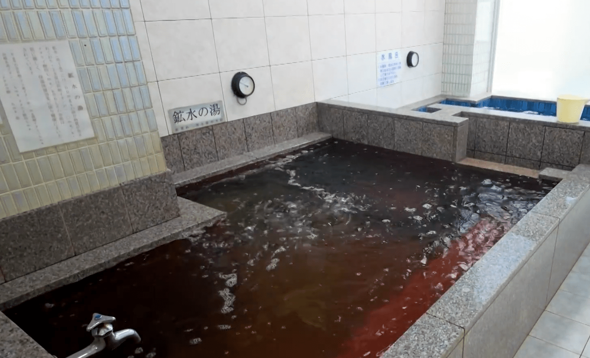
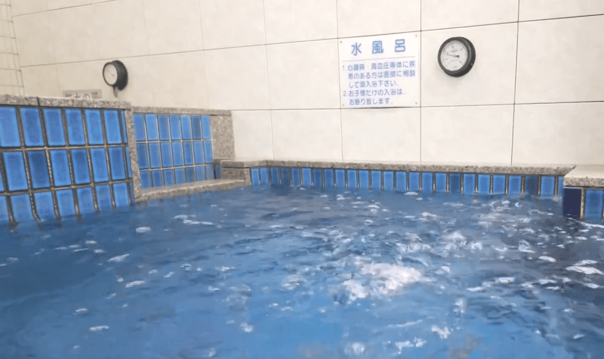
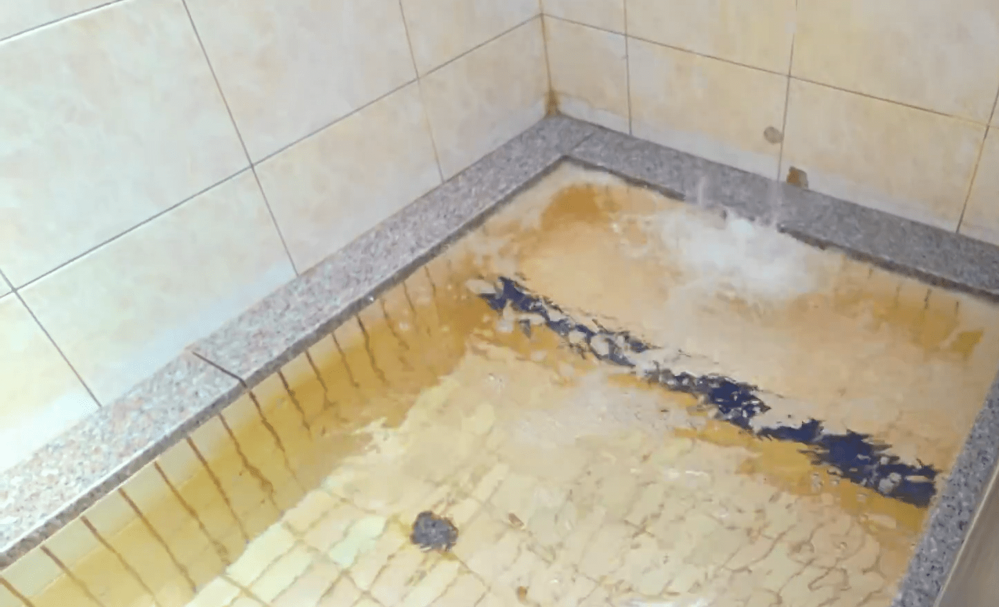

TOP
お風呂
料金
店長から一言
アクセス

お 風 呂

ジェットバス
ブクブクとした心地よい水流が全身を包み込み、疲れた体を一気にリフレッシュしてくれるジェットバス。 まるでマッサージみたいな感覚で、思わず「もうちょっと入りたい」と感じてしまう気持ちよさです。 友達と一緒でも、ひとりでも楽しめる、人気のお風呂です。

電気風呂
ピリッとした刺激がクセになる電気風呂。 最初はびっくりするけど、慣れてくるとじんわりと体の奥まで効いてくる感覚がやみつきに。 運動後や疲れがたまった日にぴったりの、スッキリ感を味わえるお風呂です。
座風呂
ゆったり座りながら楽しめる、リラックス重視のお風呂。 背中や腰に当たる心地よい水流で、自然と力が抜けていきます。 のんびり過ごしたいときにぴったりの一湯です。

鉱水湯
ミネラルを含んだやさしいお湯が、体をじんわり温めてくれる鉱水。 刺激が少なく、ゆっくり浸かるほどに心までほぐれていくような感覚が味わえます。 落ち着いた時間を楽しみたい方におすすめです。

水風呂
キリッと冷たい水が、火照った体を一気に引き締める水風呂。 お風呂との温冷交代で、爽快感は格別です。 最初は勇気がいるけど、ハマる人続出の人気スポットです。

打たせ湯
上から流れ落ちるお湯が、肩や背中にダイレクトに当たる打たせ湯。 ほどよい刺激でコリをほぐしながら、リフレッシュできる気持ちよさが魅力です。 ちょっとした特別感も味わえます。